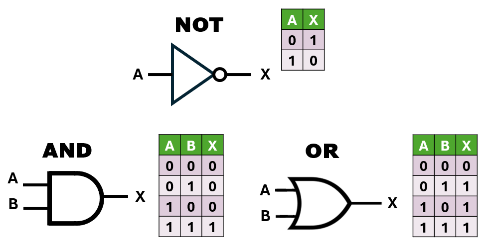

Unidad 2: Lógica Digital - Lección 13
En la lección anterior aprendimos el idioma de las máquinas (0 y 1) y sus operaciones básicas. Pero las ecuaciones matemáticas a veces son difíciles de visualizar. Como ingenieros, necesitamos estar seguros de qué hará nuestro circuito en cada una de las situaciones posibles. Hoy aprenderemos a dibujar el mapa que elimina todas las dudas: la Tabla de Verdad.
Es una lista donde escribimos todas las combinaciones posibles de ceros y unos para las entradas.
Filas necesarias = \(2^n\)
(Donde \(n\) es el número de variables o sensores)
El error #1 es repetir combinaciones o saltarse alguna. Para evitarlo, usamos el Orden Binario. Sigue este patrón para las columnas de la izquierda (Entradas):
¿Por qué así? Porque en realidad estás contando en binario (0, 1, 2, 3):
| 0 0 | = | 0 |
| 0 1 | = | 1 |
| 1 0 | = | 2 |
| 1 1 | = | 3 |
¡Mantén siempre este orden y tus diseños futuros saldrán automáticos!
Vamos a asociar nuestras operaciones con sus Símbolos Lógicos (los dibujos para los planos) y sus tablas.

Fig. 1: Símbolos estándar y sus tablas de verdad.
Esta idea de "entrada vs. salida" no es nueva. ¿Recuerdas el circuito inversor del Laboratorio de la Lección 9? Allí viste cómo un interruptor (entrada) controlaba un LED (salida) de forma opuesta. Podemos representar ese comportamiento con una tabla de verdad simple:
| Entrada (Interruptor) | Salida (LED) |
|---|---|
| 0 (Soltado) | 1 (Encendido) |
| 1 (Presionado) | 0 (Apagado) |
Esta es la tabla de verdad para la operación NOT (Inversión).
Ecuación: \(X = \bar{A}\). Su función es llevar la contraria: lo que entra, sale al revés.
Imagina una manguera de jardín por la que fluye agua libremente.
¡Es un mecanismo de interrupción!
| Entrada A (Pie) | Salida X (Agua) |
|---|---|
| 0 (Levantado) | 1 (Fluye) |
| 1 (Pisado) | 0 (Bloqueado) |
Ecuación: \(X = A \cdot B\). Solo es 1 si todas las entradas son 1.
La AND funciona como una multiplicación. Piensa en el 0 como un elemento destructivo:
Analogía: Es como una cadena de metal. Si un solo eslabón se rompe (0), la cadena entera falla y se cae, sin importar qué tan fuertes sean los otros eslabones.
| A | B | Salida X |
|---|---|---|
| 0 | 0 | 0 |
| 0 | 1 | 0 |
| 1 | 0 | 0 |
| 1 | 1 | 1 |
Ecuación: \(X = A + B\). Es 1 si alguna (o ambas) es 1.
En matemáticas normales, \(1+1=2\). Pero en lógica digital, el 1 no es una cantidad, es un estado (Encendido/Lleno).
Imagínalo así: Si tienes un vaso lleno de agua (1) y le echas otro vaso lleno de agua (1), el resultado es... un reguero de agua, pero el vaso sigue estando simplemente Lleno (1). No puedes estar "doblemente encendido".
| A | B | Salida X |
|---|---|---|
| 0 | 0 | 0 |
| 0 | 1 | 1 |
| 1 | 0 | 1 |
| 1 | 1 | 1 |
Observa que en nuestras tablas, la salida solo puede ser 0 o 1. No hay "tal vez", "quizás" o "un poco". Esta precisión binaria (Verdadero/Falso, Sí/No, Encendido/Apagado) es fundamental para eliminar la ambigüedad en los sistemas digitales y es la base sobre la cual operan las computadoras y, por ende, muchas inteligencias artificiales.
La idea de "todas las posibilidades" (entrada/salida) puede introducirse con juegos lógicos simples. Por ejemplo, con reglas tipo "Si llueve Y tengo paraguas, entonces salgo seco". Haz que los niños identifiquen si la afirmación es verdadera o falsa para diferentes combinaciones de "llueve/no llueve" y "tengo paraguas/no tengo paraguas".
Imagina una alarma ($A$) que suena si detecta Movimiento ($M$) O si se abre la Ventana ($V$).
Operación: OR (\(A = M + V\)).
| M | V | Alarma (A) | ¿Qué pasa? |
|---|---|---|---|
| 0 | 0 | 0 | Silencio total. |
| 0 | 1 | 1 | ¡Ventana abierta! 🔔 |
| 1 | 0 | 1 | ¡Movimiento! 🔔 |
| 1 | 1 | 1 | ¡Intruso total! 🔔 |
Si eres profesor, puedes usar las Tablas de Verdad para crear reglas de juego justas en el aula:
"Ganarás el premio si: (Haces la tarea) AND (Ayudas a un compañero)."
Enseñar a los niños a visualizar estas reglas en una tabla (1=Sí, 0=No) desarrolla su Pensamiento Computacional y les ayuda a entender que las consecuencias son resultados lógicos de sus acciones.
¿Hiciste una tabla gigante y quieres saber si está bien? Pregúntale a Wolfram Alpha.
⚠️ Advertencia de Traducción: WolframAlpha "habla" en idioma Matemático, no Ingenieril. No te asustes si ves símbolos raros:
(¿Por qué usan símbolos distintos para lo mismo? ¡Es un misterio que resolveremos en la Lección 20: La Piedra Rosetta de la Unidad 3!)
Imagina que para abrir una caja ($Open$) necesitas: Tener la llave ($K=1$) Y saber la contraseña ($P=1$).
Dibuja la tabla de verdad en tu cuaderno. ¿En cuántos casos logras abrir la caja? (Respuesta: Solo 1 de 4).
Dos expertos analizan los conceptos de esta lección y comparten estrategias para enseñar las Tablas de Verdad y su importancia como herramienta visual para entender circuitos lógicos. Discuten cómo introducir la idea de "todas las posibilidades" de forma comprensible y cómo conectar este concepto con la toma de decisiones en la vida cotidiana y con la operación de las computadoras. Comparten analogías útiles y reflexiones sobre la integración de herramientas digitales, como simuladores o IA, para verificar tablas de verdad y explorar funciones complejas.
Tu cuaderno es tu laboratorio pedagógico. Aquí transformas la información en conocimiento útil para tu futura práctica docente.
Resume con tus palabras qué es una tabla de verdad y por qué es útil.
Dibuja la tabla de verdad para la operación lógica NOT. Incluye las columnas de entrada y salida.
Imagina que estás diseñando un juego simple de "Verdadero o Falso" para niños. Escribe una regla del juego que involucre una operación lógica AND o OR (por ejemplo: "Si la pregunta es sobre animales Y la respuesta es sí, ganas un punto").
Escribe al menos una duda que te quedó de esta lección. Ej: "¿Cómo se construye la tabla de verdad para una operación XOR?"
💡 Recuerda: No copies textualmente. Resume con tus palabras, dibuja, conecta con tu realidad. Tu cuaderno es para ti, no para el profesor. Es donde transformas información en comprensión y preparas tus futuras clases con autenticidad.
¡Perfecto! Ya no tienes que adivinar; con la tabla sabes exactamente qué hace el circuito. Pero... ¿qué pasa si la tabla nos dice que necesitamos una ecuación gigante con muchos chips? ¿Es obligatorio armarla así? No. En la próxima lección, aprenderemos los Trucos de Magia Matemática (Propiedades y Leyes de De Morgan) para convertir circuitos monstruosos en soluciones elegantes y baratas.